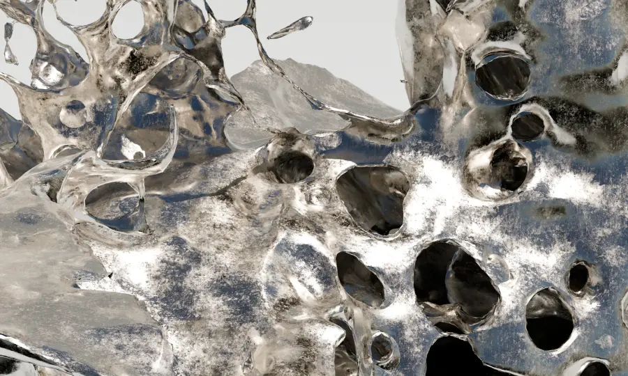

Exoplanet Watch
Four transits confirmed from a 14-inch scope.
Astronomer · Portfolio
ASTRONOMER
Long nights, cold domes, and the best signal-to-noise stories anywhere.

About
Long nights, cold domes, and the best signal-to-noise stories anywhere.
Everything on this page is made to be scrolled slowly. The work below is the honest list — outcomes attached, fluff removed.
Currently
Focus — Photometry
Also — Telescope ops
Based — Tallinn
Selected work
Four transits confirmed from a 14-inch scope.
Three cameras triangulating a fireball.
A 300-night light curve of one stubborn star.
A year of deep-sky images from a Bortle 6 yard.
A roof, a weather station, and zero 2 a.m. drives.
An outreach rig ten schools borrowed.
Services
Long nights, cold domes, and the best signal-to-noise stories anywhere. Photometry is where this shows up most — ask for examples on a call.
Long nights, cold domes, and the best signal-to-noise stories anywhere. Telescope ops is where this shows up most — ask for examples on a call.
Long nights, cold domes, and the best signal-to-noise stories anywhere. Data reduction is where this shows up most — ask for examples on a call.
Long nights, cold domes, and the best signal-to-noise stories anywhere. Orbital mechanics is where this shows up most — ask for examples on a call.
Long nights, cold domes, and the best signal-to-noise stories anywhere. Outreach is where this shows up most — ask for examples on a call.
Long nights, cold domes, and the best signal-to-noise stories anywhere. Python pipelines is where this shows up most — ask for examples on a call.
Contact
guest@astronomer-warm:~$ contact --init → name : Soren Reyes → role : Astronomer → email : hello@astronomer-warm.io → response-time : within 24 hours guest@astronomer-warm:~$ _
“Long nights, cold domes, and the best signal-to-noise stories anywhere.”